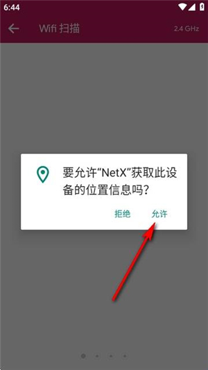
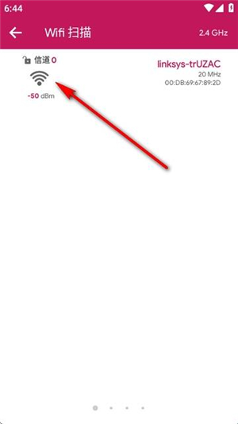
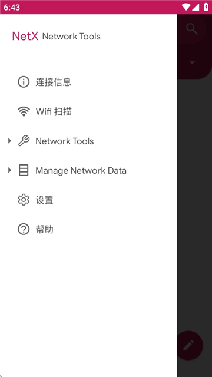

用 NetX 把家里网络摸得门清——从扫描设备到远程开机全流程
还在疑惑家里 WiFi 下到底连了多少设备？路由器卡慢时不知道从哪下手排查？NetX 一个安卓 App 就能帮你把局域网拓扑、信号质量、公网 IP 甚至远程唤醒全部搞定。
读完这篇教程，你能：用手机一键扫出家里 WiFi 下所有在线设备、看懂每个设备的 MAC 和厂商、配置外网远程唤醒家里的电脑、在出行时随时确认自己的蜂窝网络状态。全程不需要电脑操作，也不需要刷路由器固件——一台装了 NetX 的安卓手机就行。
准备工作：版本、平台与权限
NetX官网 目前只支持安卓平台，最低要求 Android 7.0（Nougat）。iOS 用户暂时只能找同类替代了。安装包从官方下载拿到手装好后，打开 App 首先要处理的是权限问题。
NetX 首次启动会弹几个权限请求：位置信息、通知、后台运行。很多人这里习惯一路跳过，后面会发现扫描结果空空如也。这里注意，位置权限一定要给——安卓 12 以后，WiFi 扫描结果和位置权限绑定了，不给的话 App 连你当前连的 SSID 都读不到，更别说扫其他设备了。
位置权限建议选「始终允许」或「仅在使用时允许」，取决于你会不会在锁屏时也让它跑扫描。通知权限给不给影响不大，主要是扫描完成后会不会弹个提示。后台运行权限可以在系统设置里把 NetX 加到电池优化白名单，防止系统把它杀了。

全部权限搞定后，App 默认停在「设备」标签页——右下角一个蓝色扫描按钮，这就是我们第一步要用到的核心入口。
第一步：扫出家里所有在线设备
拿起手机连到你要扫的那个 WiFi，等 WiFi 图标稳定了（不要在 2G/5G 蜂窝数据下扫，那时候只能扫到自己），点右下角扫描按钮。正常情况下 3 到 15 秒出结果，取决于你家设备多不多、路由器响应快不快。
扫描完成后，列表里每台设备会以一张卡片展示出来。卡片上你能看到：IP 地址、MAC 地址、厂商名称和主机名。厂商名是通过 MAC 前缀反查的——比如小米路由器会显示"Xiaomi"、苹果设备显示"Apple"、华硕显示"ASUS"。主机名能不能显示出来取决于设备有没有向局域网广播它的 Bonjour 或 NetBIOS 名，Windows 电脑通常能显示，智能家居设备大多显示不出来。
卡片左侧还有个小图标，NetX 会自动根据厂商挑对应的图案——苹果设备用苹果 logo、路由器用路由器图标，这样你扫完一眼就能看出家里都有啥。

扫完别急着退出，先数一下设备数量对不对。正常家庭 10 到 20 台设备比较常见：路由器、电视、两三部手机、一两台电脑、几个智能音箱、可能还有几个物联网设备（空气净化器、扫地机器人之类）。如果你数下来对不上，或者有些设备看着陌生，后面我们会讲怎么进一步排查。
第二步：深入看某台设备的详情
列表里点任意一张卡片进去，能看到这台设备的完整信息。除了 IP 和 MAC 这些基本项，还有它在局域网里的IPv6 地址、上次在线时间（如果它曾经在线后来离线了）、开放端口扫描入口和——最关键的——WOL 唤醒设置。
IPv6 地址这块简单提一下：如果你家运营商和路由器都开了 IPv6，每台设备的详情里会有个以 2400 或 2408 开头的全局 IPv6 地址。IPv6 环境下每台设备理论上都有公网可达的地址，后面讲远程唤醒时你就会知道这有多方便。
开放端口扫描可以帮你快速判断一台设备跑了什么服务——比如路由器通常开着 80/443（Web 管理）、37215（华硕特有的远程管理），NAS 会开 5000/5001（Web 界面）、22（SSH）。扫描结果里看到熟悉的端口，基本就能确认设备类型了。

第三步：配置远程唤醒（WOL）
这是很多人用 NetX 的核心诉求：人在公司或出差，想远程把家里的电脑开机挂个下载任务或者跑个训练。WOL 魔法包默认只在同局域网生效，手机用蜂窝数据发不出去——因为魔法包是 UDP 广播包，出不了家宽的 NAT。解决这个问题有三条路，按简单程度排：
最省心的方案是路由器自带 WOL 功能。 OpenWrt、华硕梅林、小米路由器这几家固件都有现成的 Web 界面或 App 入口，不需要记端口号，登录路由器后点一下就能远程唤醒。
通用方案是路由器端口转发。 登录路由器管理页面（通常是 http://192.168.1.1），找到端口转发或虚拟服务器菜单，新建一条规则：外部端口 9、内部 IP 填你家的局域网广播地址（大多数路由器是 192.168.1.255）、内部端口 9、协议选 UDP、源地址 0.0.0.0/0。保存后，在 NetX 的设备详情页 → WOL 设置里，把目标 IP 改成你家的公网 IP 或 DDNS 域名，端口保持 9，直接发唤醒包就行。
零配置方案是 VPN 接入。 如果你家有 OpenWrt + WireGuard 或 OpenVPN，手机在外连 VPN 后就等于在家里局域网里，WOL 直接能用，不用折腾端口转发也不用记 DDNS。
这里注意几个安全细节：端口转发方案会把你的路由器暴露在公网，只转发 UDP 9 一个端口就行，别顺手开其他端口；定期查一下 DDNS 解析是否指向正确的公网 IP；能不用端口转发就不用，路由器原生 WOL 或 VPN 都更安全。具体参数和注意事项可以翻一下 NetX文档。
第四步：切到蜂窝数据也能用的功能
NetX 不是只有连 WiFi 才能用。切到移动数据（4G/5G）时，WiFi 信息卡会自动切换到显示蜂窝网络信息——外部 IP、运营商、基站位置、网络制式（4G LTE 还是 5G NR）、信号强度（dBm）、小区 ID（CID）这些都会列出来。
这个模式下你不能做局域网扫描，因为蜂窝网络是跨运营商的，你的手机看不到其他用户的设备。但网络诊断工具基本都能用：ping、traceroute、网速测试、IP 查询——这些不依赖局域网。远程唤醒在蜂窝下能不能生效，取决于你家里路由器有没有配好端口转发或 DDNS（就是上一步讲的那套）。
数据流量注意一下：ping 大量数据包、traceroute 多跳、长时间网速测试这些操作会烧流量，建议重负载工具留到 WiFi 环境下跑，蜂窝下查个 IP 或 ping 一两跳没问题。
常见卡点
卡点一：扫完列表是空的。检查顺序是：手机真的连上 WiFi 了吗（下拉通知栏确认，别看着 WiFi 图标亮着其实没拿到 IP）→ 位置权限给了吗 → 路由器开了 AP 隔离（客户端隔离）吗（很多路由器默认关，但部分高端路由有这个选项）→ 你是不是在蜂窝数据下扫的。
卡点二：远程唤醒没反应。先在同 WiFi 下直接发 WOL 包，确认硬件层面没问题——电脑 BIOS 里 WOL 开关开了吗？网卡驱动里有没有禁用 Magic Packet？同局域网能唤醒说明 PC 端没问题，再去查路由器的端口转发规则、DDNS 解析、UDP 端口有没有被运营商封（少数地区运营商会封 UDP 9）。
卡点三：有些设备扫不到。智能家居设备（空气净化器、扫地机器人、智能插座）经常不响应 ARP 请求，这时候可以试试手动扫描：知道它的 IP 的话直接在 App 里输入 IP 扫，或者等它主动联网时再扫一次。另外，离线设备默认不会出现在列表里，除非你开了历史记录。
一句话进阶
上面讲的是最基础的四个场景。再往下玩，可以把 NetX 和家里的 IPv6 环境结合起来——IPv6 下每台设备都有公网可达地址，SSH 和 WOL 都不需要 NAT 穿透，公网手机直接连就行；也可以把定时扫描做成日常巡检，每周固定时间扫一遍家里设备，有没有蹭网一眼就能看出来。
NetX 把传统上需要电脑端命令行工具才能做的网络诊断，全部搬到了手机上。出门在外时掏出来查个 IP、跑个 ping，比带个笔记本方便多了。这套 NetX 的整理资料在 GitHub、Gitee 和 GitCode 三个仓库都能找到。